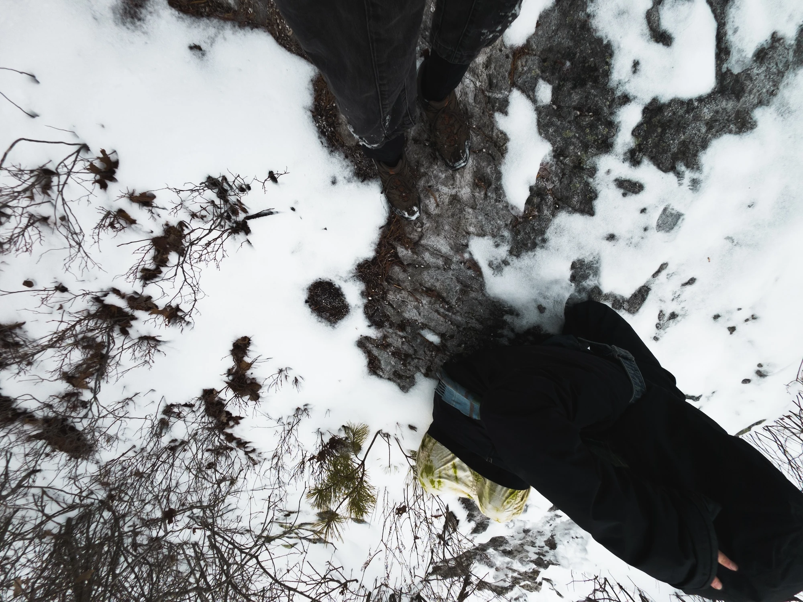

sign up here
Algotrek 5
Saturday March 29th, 2025
@ Lantern Hill Trail, CT
Hiking and Performance Event
algotrek is a marriage of sound, technology and nature. In the form of a short, low intensity hike, artists and attendees will gather to perform sound rituals in the mountains. Through performance and our connection to the ground beneath our feet we will celebrate and acknowledge the land and its indigenous roots.
on site we will provide:- portable 12v and 5v power packs
- portable pa/amp and bluetooth speakers
- first aid kits
- lunch and water
- comfortable hiking/walking shoes
- comfortable clothes you can move in
- happiness :)
- you will need to drive to the site, me and M will be driving from providence, RI. Carpooling with us is a possibility, but not a guarantee. Please reach out to me at femi.fleming@gmail.com if you are interested in coming from providence or nearby at least a week prior to the event to organize rides over.
- there is a fixed list for performances but if you want to propose one for the hike, please reach out to me as well.
- M has been organizing and attending algotrek and similar events for about 10 years. I went to the one in cold spring in april 2023 and had an incredible experience that I wanted to share with my friends up in providence so I asked them recently if we could organize one here.
Read a history and detailed description of algorek here
Land Acknowledgment:
We acknowledge that Lantern Hill Trail is located on the ancestral lands of the Mashantucket Pequot Tribal Nation, who have stewarded this land for countless generations. The Mashantucket Pequot people have deep historical, cultural, and spiritual ties to this region, and their ongoing presence and contributions continue to shape this land today.
As we walk these trails, we recognize the histories of Indigenous peoples who have cared for this land before us and remain its rightful stewards. We honor their resilience, their traditions, and their connection to the natural world.
We encourage all visitors to approach this land with respect, mindfulness, and a commitment to learning about and supporting Indigenous communities both past and present.


SAT 22 April 2023; Cold Spring, NY; Bull Hill.
A celebration for our Mother Earth, in the form of a low-impact walk, and performance.
2 miles from the Cold Spring Hudson Line station, near the Cornish Estate Ruins.
Live coding spells will take place in the woods.
Special thanks to M DeNardo for organizing a beautiful event